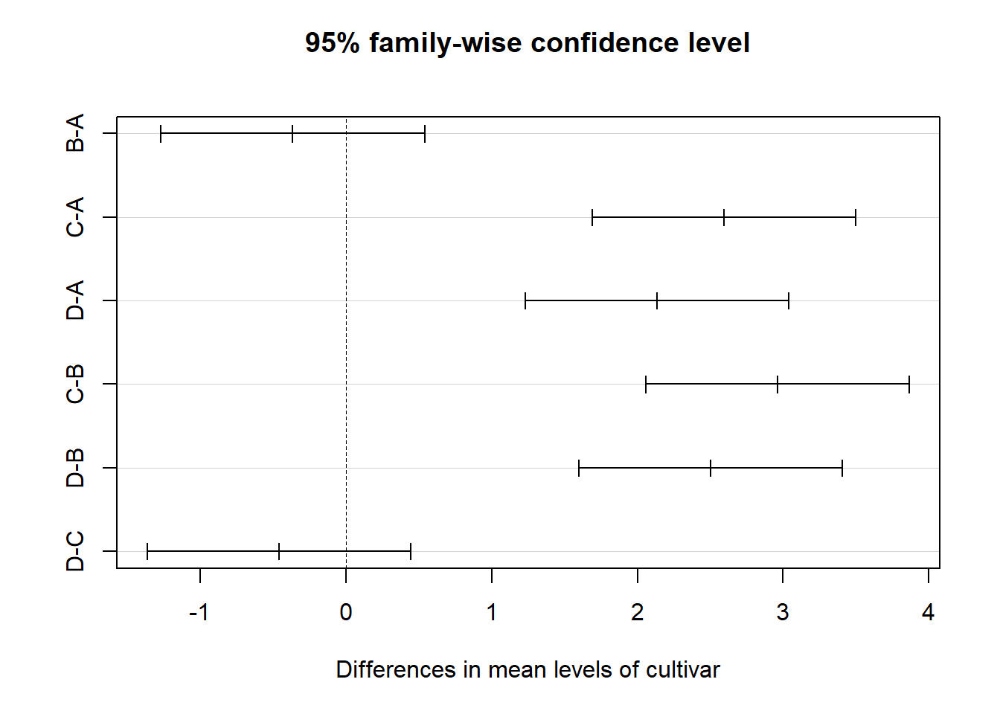

13 Transformação de dados
- O modelo de Análise de Variância pressupõe que exista homocedasticidade, ou seja, que os tratamentos apresentem a mesma variabilidade;
- Algumas vezes este pressuposto pode não ser atendido e assim, para corrigir este problema existe uma saída por vezes bastante simples que é a transformação de dados;
- Esta técnica consiste na utilização de um artifício matemático para tornar o modelo de ANOVA válido.
13.1 Heterogeneidade Irregular
Ocorre quando alguns tratamentos apresentam maior variabilidade do que outros, contudo, não existe uma associação entre média e variância;
Neste caso, não há uma transformação matemática que elimine esta variabilidade.
Solução:
Modelos Lineares Generalizados;
Análise não paramétrica.
13.2 Heterogeneidade Regular
- Acontece quando existe alguma associação entre as médias dos tratamentos e a variância;
- A heterocedasticidade regular está associada é falta de normalidade do erros;
Solução:
Transformação dos dados;
Modelos Lineares Generalizados;
Análise não paramétrica.
13.3 Princípio de transformação
Seja \(E(Y) = \mu\) a média de Y e suponha que o desvio padrão de Y é proporcional a potência da média de Y tal que:
\(\sigma Y \alpha \mu^\alpha.\)
O objetivo é encontrar uma transformação de \(Y\) que gere uma variância constante.
Suponha que a transformação é uma potência dos dados originais, isto é:
\(Y^*=Y^\lambda\)
Assim, pode ser mostrado que:
\(\sigma Y^* \alpha \mu^{\lambda+ \alpha-1}.\)
Caso \(\lambda = 1-\alpha\), então a variância dos dados transformados \(Y^*\) é constante, mostrando que não é necessário transformação.
Algumas das transformações mais comuns são:
| \(\lambda\) | Transformação |
|---|---|
| 1 | Nenhuma |
| 0,5 | \(\sqrt{y}\) |
| 0 | log(y) |
| -0,5 | \(\frac{1}{\sqrt{y}}\) |
| -1 | \(\frac{1}{y}\) |
13.4 Seleção Empírica de \(\alpha\)
Em muitas situações de delineamentos experimentais em que há repetições, pode-se estimar empiricamente \(\alpha\) a partir dos dados.
Dado que na i-ésima combinação de tratamentos
\(\sigma Y \alpha \mu^{\alpha}_i =\theta \mu^{\alpha}_i\)
em que \(\theta\) é uma constante de proporcionalidade, pode-se aplicar logaritmos para obter:
\(log (\sigma_{Y_i}) = log( \theta) + \alpha log( \mu_{i})\)
Portanto, um gráfico de \(log(\sigma_{Y_i})\) versus \(log(\mu_i)\) seria uma linha reta com uma inclinação \(\alpha\).
Como não se conhece \(\sigma_{Y_i}\) e \(\mu_i\) , utilizam-se as estimativas \(s_i\) e a média \(\hat{Y}_i\), respectivamente;
O parâmetro de inclinação da equação linear ajustada é uma estimativa de \(\alpha\).
13.5 Transf. de Box & Cox
Box & Cox (1964) mostraram como o parâmetro de transformação \(\lambda\) em \(Y^* = Y^\lambda\) pode ser estimado simultaneamente com outros parâmetros do modelo (média geral e efeitos de tratamentos) usando o método de máxima verossimilhança. O procedimento consiste em realizar, para vários valores de \(\lambda\), uma análise de variância padrão sobre:
\[Y_i(\lambda) = \left\{ \begin{array}{ll} \ln(X_i),~~~~~~\textrm{se $\lambda = 0$,} \\ \\ \dfrac{X_i^{\lambda} - 1}{\lambda},~~~~\textrm{se $\lambda \neq 0$,}\end{array} \right.\]
A estimativa de máxima verossimilhança de \(\lambda\) é o valor para o qual a soma de quadrado do resíduo, SQRes(\(\lambda\)), é mínima.
Este valor de \(\lambda\) é encontrado através do gráfico de SQRes(\(\lambda\)) versus \(\lambda\), sendo que \(\lambda\) é o valor que minimiza a SQRes(\(\lambda\)).
Ou, ainda, o valor de \(\lambda\) que maximiza a função de logverossimilhança.
Um intervalo de confiança \(100(1-\alpha)\)% para \(\lambda\) pode ser encontrado calculando-se:
\(IC(\lambda) = SQRes(\lambda)(1 \pm \frac{t2^2/2=2;v }{v})\)
em que \(v\) é o número de graus de liberdade.
Se o intervalo de confiança incluir o valor \(\lambda = 1\), isto quer dizer que não é necessário transformar os dados.
13.6 Exemplo 1

Vamos considerar os dados adaptados de ZAMBÃO; SAMPAIO; BARBIN, 1982 (Livro Planejamento e Análise Estatística de Experimentos Agronômicos - Décio Barbin) como exemplo, em que o pesquisador pretende comparar quatro cultivares de pêssego quanto ao enraizamento de estacas. Foi utilizado cinco repetições por tratamento e o delineamento experimental foi inteiramente casualizado.
Fonte da foto: Rosa, G.G., 2014 (Pelotas)
| Tratamentos | R1 | R2 | R3 | R4 | R5 | TOTAL |
|---|---|---|---|---|---|---|
| A | 02 | 02 | 01 | 01 | 00 | 06 |
| B | 01 | 00 | 00 | 01 | 01 | 03 |
| C | 12 | 10 | 14 | 17 | 11 | 64 |
| D | 07 | 09 | 15 | 08 | 10 | 49 |
13.7 Conjunto de dados
resposta=c(02,02,01,01,00,01,00,00,01,01,12,10,14,17,11,07,09,15,08,10)
cultivar=rep(LETTERS[1:4],e=5)
cultivar=as.factor(cultivar)13.8 Gráficos exploratórios
13.9 Análise de variância
## Analysis of Variance Table
##
## Response: resposta
## Df Sum Sq Mean Sq F value Pr(>F)
## cultivar 3 564.2 188.07 40.884 9.945e-08 ***
## Residuals 16 73.6 4.60
## ---
## Signif. codes: 0 '***' 0.001 '**' 0.01 '*' 0.05 '.' 0.1 ' ' 113.10 Pressuposições
13.10.1 Normalidade dos erros
##
## Shapiro-Wilk normality test
##
## data: modelo$residuals
## W = 0.88533, p-value = 0.02209Os erros não seguem distribuição normal
13.10.2 Homogeneidade das variâncias
##
## Bartlett test of homogeneity of variances
##
## data: modelo$residuals by cultivar
## Bartlett's K-squared = 12.141, df = 3, p-value = 0.006914As variâncias não são homogêneas
13.10.3 Independência dos erros
##
## Durbin-Watson test
##
## data: modelo
## DW = 2.269, p-value = 0.4631
## alternative hypothesis: true autocorrelation is greater than 0Os erros são independentes.
13.10.4 Gráfico de resíduos padronizados
a=anova(modelo)
plot(modelo$residuals/sqrt(a$`Mean Sq`[2]), ylab="Resíduos Padronizados")
abline(h=0)
As pressuposições de normalidade dos erros e homogeneidade das variâncias não foram atendidas. Dessa forma, vamos transformar os dados e conferir novamente as pressuposições!
13.11 Transformação de dados
13.11.1 Usando a package MASS

13.12 Dados transformados
13.12.1 Modelo transformado
13.12.2 Normalidade dos erros
##
## Shapiro-Wilk normality test
##
## data: modelo$residuals
## W = 0.96828, p-value = 0.7182Os erros seguem distribuição normal
13.12.3 Homogeneidade das variâncias
##
## Bartlett test of homogeneity of variances
##
## data: modelo$residuals by cultivar
## Bartlett's K-squared = 0.71659, df = 3, p-value = 0.8693As variâncias são homogêneas
13.12.4 Independência dos erros
##
## Durbin-Watson test
##
## data: modelo
## DW = 2.1575, p-value = 0.3596
## alternative hypothesis: true autocorrelation is greater than 0Os erros são independentes.

13.13 Comparação múltipla
13.13.1 Teste de Comparação Múltipla de Tukey (Utilizando o multcomp)
## A B C D
## "a" "a" "b" "b"13.13.2 Teste de Comparação Múltipla de Tukey (Utilizando o TukeyHSD do R)
## Tukey multiple comparisons of means
## 95% family-wise confidence level
##
## Fit: aov(formula = sqrt(resposta) ~ cultivar)
##
## $cultivar
## diff lwr upr p adj
## B-A -0.3656854 -1.271030 0.5396592 0.6619314
## C-A 2.5958680 1.690523 3.5012126 0.0000022
## D-A 2.1362025 1.230858 3.0415471 0.0000252
## C-B 2.9615534 2.056209 3.8668981 0.0000004
## D-B 2.5018879 1.596543 3.4072325 0.0000035
## D-C -0.4596655 -1.365010 0.4456791 0.4869422
13.13.3 Teste de Comparação Múltipla de Tukey (Utilizando o HSD.test do Agricolae)

13.13.4 Teste de Comparação Múltipla de Tukey (Utilizando o ea1() do pacote easyanova)
## treatment mean tukey
## 1 C 3.5616 a
## 2 D 3.1019 a
## 3 A 0.9657 b
## 4 B 0.6000 b13.13.5 Teste de Comparação Múltipla de Tukey (Utilizando o dic do pacote ExpDes.pt)
## ------------------------------------------------------------------------
## Quadro da analise de variancia
## ------------------------------------------------------------------------
## GL SQ QM Fc Pr>Fc
## Tratamento 3 33.346 11.1155 44.402 5.5521e-08
## Residuo 16 4.005 0.2503
## Total 19 37.352
## ------------------------------------------------------------------------
## CV = 24.32 %
##
## ------------------------------------------------------------------------
## Teste de normalidade dos residuos
## Valor-p: 0.7181511
## De acordo com o teste de Shapiro-Wilk a 5% de significancia, os residuos podem ser considerados normais.
## ------------------------------------------------------------------------
##
## ------------------------------------------------------------------------
## Teste de homogeneidade de variancia
## valor-p: 0.8692942
## De acordo com o teste de bartlett a 5% de significancia, as variancias podem ser consideradas homogeneas.
## ------------------------------------------------------------------------
##
## Teste de Tukey
## ------------------------------------------------------------------------
## Grupos Tratamentos Medias
## a C 3.561553
## a D 3.101888
## b A 0.9656854
## b B 0.6
## ------------------------------------------------------------------------13.14 Exemplo 2
13.14.1 Conjunto de dados
Um experimento foi conduzido com o intuito de avaliar a inoculação de Trichoderma sp. (T4), Azospirillum sp. (T3) e associação de ambos (T2) em relação a testemunha, quanto à altura de plantas de milho. O experimento foi conduzido em delineamento inteiramente casualizado com 8 repetições.
RESP=c(124,136,124,102,112,108,102,122,
130,128,118,106,126,106,128,122,
132,132,190,144,090,126,142,148,
140,120,118,098,110,140,104,142)
TRAT=rep(c(paste("T",1:4)),e=8)
dados = data.frame(TRAT, RESP)13.15 Estatística descritiva
Média = with(dados, mean(RESP))
Variância = with(dados, var(RESP))
Desvio = with(dados, sd(RESP))
CV = Desvio / Média * 100
desc = cbind(Média, Variância, Desvio, CV)
kable(round(desc,2), align="l")| Média | Variância | Desvio | CV |
|---|---|---|---|
| 124.06 | 367.09 | 19.16 | 15.44 |
13.15.1 Por Cultivar
Médias = with(dados, tapply(RESP, TRAT, mean))
Variâncias = with(dados, tapply(RESP, TRAT, var))
Desvios = with(dados, tapply(RESP, TRAT, sd))
CV = Desvios / Médias * 100
Desc = cbind(Médias, Variâncias, Desvios, CV)
kable(round(Desc,2),align="l")| Médias | Variâncias | Desvios | CV | |
|---|---|---|---|---|
| T 1 | 116.25 | 147.93 | 12.16 | 10.46 |
| T 2 | 120.50 | 94.57 | 9.72 | 8.07 |
| T 3 | 138.00 | 768.00 | 27.71 | 20.08 |
| T 4 | 121.50 | 301.43 | 17.36 | 14.29 |
13.16 Gráficos exploratórios

13.17 Análise de Variância
\[\begin{eqnarray*} \left\{ \begin{array}{ll} H_0: & \mu_1 = \mu_2 = \mu_3 = \cdots = \mu_{15} \\[.2cm] H_1: & \mu_i \neq \mu_i' \qquad i \neq i'. \end{array} \right. \end{eqnarray*}\]
| Df | Sum Sq | Mean Sq | F value | Pr(>F) | |
|---|---|---|---|---|---|
| TRAT | 3 | 2196.375 | 732.1250 | 2.23221 | 0.1064722 |
| Residuals | 28 | 9183.500 | 327.9821 |
13.18 Pressuposições
13.18.1 Normalidade dos erros
\[\begin{eqnarray*} \left\{ \begin{array}{ll} H_0: & \mbox{Os erros seguem distribuição normal}\\[.2cm] H_1: & \mbox{Os erros não seguem distribuição normal}. \end{array} \right. \end{eqnarray*}\]
##
## Shapiro-Wilk normality test
##
## data: mod$res
## W = 0.94078, p-value = 0.07878Como p-valor calculado (\(p=0,07878\)) é maior que o nível de significância adotado (\(p=0,05\)), não se rejeita \(H_0\). Logo, os erros seguem distribuição normal.
13.18.2 Homogeneidade de variâncias
\[\begin{eqnarray*} \left\{ \begin{array}{ll} H_0: & \mbox{ As variâncias são homogêneas}\\[.2cm] H_1: & \mbox{ As variâncias não são homogêneas}. \end{array} \right. \end{eqnarray*}\]
##
## Bartlett test of homogeneity of variances
##
## data: mod$res by TRAT
## Bartlett's K-squared = 8.4132, df = 3, p-value = 0.0382Como p-valor (\(p=0,0382\)) é menor que o nível de significância adotado (\(p=0,05\)). Rejeita-se \(H_0\), logo, as variâncias dos erros não são homogêneas.
13.19 Transformação de dados

## [1] -0.2222222O valor de \(\lambda\) para a Transformação Box-Cox é -0,22222. Nesse sentido, vamos usar a aproximação. Logo, iremos usar a Transformação Log
13.19.1 Transformação log
13.19.2 Modelo com dados transformados
Devemos testar novamente as pressuposições após a Transformação!!!
## Analysis of Variance Table
##
## Response: log(RESP)
## Df Sum Sq Mean Sq F value Pr(>F)
## TRAT 3 0.11275 0.037583 1.8407 0.1627
## Residuals 28 0.57170 0.020418Como p-valor da análise de variância (\(p=0,1627\)) é maior que o nível de significância adotado, não se rejeita \(H_0\). Logo, não há evidências de diferença entre os tratamentos.
13.19.3 Normalidade dos erros
##
## Shapiro-Wilk normality test
##
## data: modelo$residuals
## W = 0.95442, p-value = 0.192213.19.4 Homogeneidade das variâncias
##
## Bartlett test of homogeneity of variances
##
## data: modelo$residuals by TRAT
## Bartlett's K-squared = 6.2678, df = 3, p-value = 0.0992813.19.5 Independências dos erros
##
## Durbin-Watson test
##
## data: modelo
## DW = 1.9204, p-value = 0.216
## alternative hypothesis: true autocorrelation is greater than 013.19.6 Usando os pacotes easyanova e ExpDes.pt
## $`Analysis of variance`
## df type I SS mean square F value p>F
## treatments 3 0.1127 0.0376 1.8407 0.1627
## Residuals 28 0.5717 0.0204 - -
##
## $Means
## treatment mean standard.error tukey snk duncan t scott_knott
## 1 T 3 4.9089 0.0505 a a a a a
## 2 T 4 4.7909 0.0505 a a a ab a
## 3 T 2 4.7887 0.0505 a a a ab a
## 4 T 1 4.7510 0.0505 a a a b a
##
## $`Multiple comparison test`
## pair contrast p(tukey) p(snk) p(duncan) p(t)
## 1 T 3 - T 4 0.1180 0.3671 0.1097 0.1097 0.1097
## 2 T 3 - T 2 0.1202 0.3512 0.2293 0.1221 0.1035
## 3 T 3 - T 1 0.1579 0.1449 0.1449 0.0509 0.0354
## 4 T 4 - T 2 0.0022 1.0000 0.9756 0.9756 0.9756
## 5 T 4 - T 1 0.0399 0.9434 0.8429 0.6036 0.5808
## 6 T 2 - T 1 0.0377 0.9516 0.6017 0.6017 0.6017
##
## $`Residual analysis`
## $`Residual analysis`$`residual analysis`
## values
## p.value Shapiro-Wilk test 0.1922
## p.value Bartlett test 0.0993
## coefficient of variation (%) 2.9700
## first value most discrepant 21.0000
## second value most discrepant 19.0000
## third value most discrepant 28.0000
##
## $`Residual analysis`$residuals
## 1 2 3 4 5 6
## 0.069304717 0.161678037 0.069304717 -0.126004035 -0.032477977 -0.068845621
## 7 8 9 10 11 12
## -0.126004035 0.053044196 0.078851858 0.063347671 -0.017997968 -0.125243499
## 13 14 15 16 17 18
## 0.047599314 -0.125243499 0.063347671 0.015338452 -0.026144593 -0.026144593
## 19 20 21 22 23 24
## 0.338077556 0.060866784 -0.409136845 -0.072664609 0.046880542 0.088265758
## 25 26 27 28 29 30
## 0.150751546 -0.003399134 -0.020206252 -0.205923398 -0.090410511 0.150751546
## 31 32
## -0.146499978 0.164936181
##
## $`Residual analysis`$`standardized residuals`
## 1 2 3 4 5 6
## 0.51034208 1.19055541 0.51034208 -0.92786125 -0.23915946 -0.50696142
## 7 8 9 10 11 12
## -0.92786125 0.39060380 0.58064476 0.46647593 -0.13253240 -0.92226086
## 13 14 15 16 17 18
## 0.35050909 -0.92226086 0.46647593 0.11294841 -0.19252205 -0.19252205
## 19 20 21 22 23 24
## 2.48951602 0.44820731 -3.01277832 -0.53508346 0.34521623 0.64996630
## 25 26 27 28 29 30
## 1.11009554 -0.02503035 -0.14879364 -1.51636685 -0.66575971 1.11009554
## 31 32
## -1.07878809 1.21454754## ------------------------------------------------------------------------
## Quadro da analise de variancia
## ------------------------------------------------------------------------
## GL SQ QM Fc Pr>Fc
## Tratamento 3 0.11275 0.037583 1.8407 0.1627
## Residuo 28 0.57170 0.020418
## Total 31 0.68444
## ------------------------------------------------------------------------
## CV = 2.97 %
##
## ------------------------------------------------------------------------
## Teste de normalidade dos residuos
## Valor-p: 0.1921639
## De acordo com o teste de Shapiro-Wilk a 5% de significancia, os residuos podem ser considerados normais.
## ------------------------------------------------------------------------
##
## ------------------------------------------------------------------------
## Teste de homogeneidade de variancia
## valor-p: 0.09928479
## De acordo com o teste de bartlett a 5% de significancia, as variancias podem ser consideradas homogeneas.
## ------------------------------------------------------------------------
##
## De acordo com o teste F, as medias nao podem ser consideradas diferentes.
## ------------------------------------------------------------------------
## Niveis Medias
## 1 T 1 4.750977
## 2 T 2 4.788683
## 3 T 3 4.908947
## 4 T 4 4.790891
## ------------------------------------------------------------------------